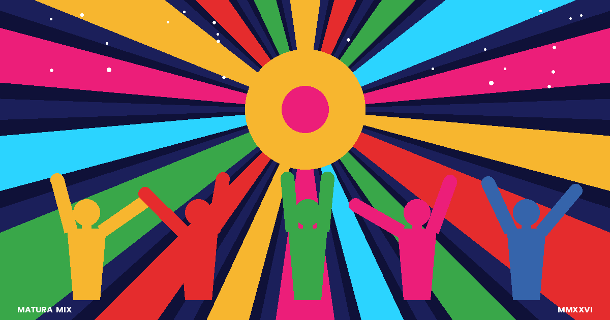

Matura Mix
Anketa za DJ-a za našu maturu

Ćao! DJ pravi plejlistu za maturu i trebaju mu tvoji favoriti. Upiši do 5 omiljenih pesama. Što nas više odgovori, to bolja žurka.
Obavezno je samo ime i bar jedna pesma sa naslovom i izvođačem. Ostalo možeš preskočiti. Podaci idu samo organizatoru i DJ-u.
Hvala! 🎉
Tvoji odgovori su sačuvani. Vidimo se na žurki.